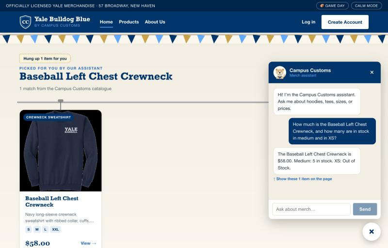
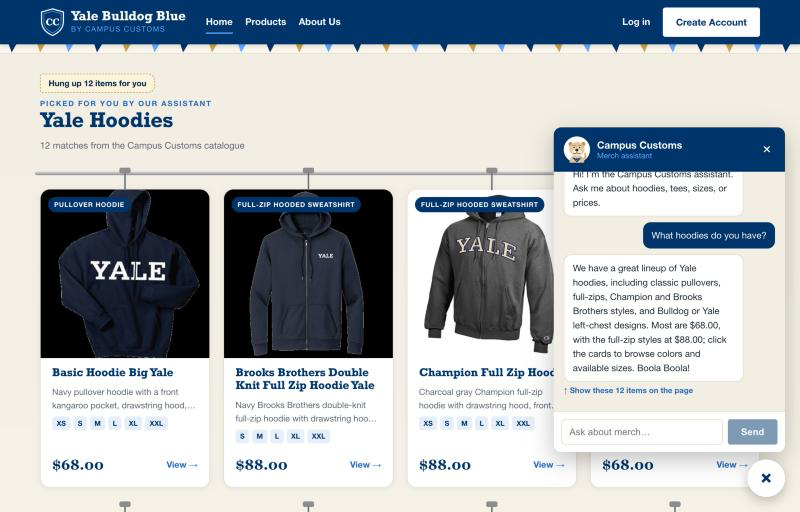
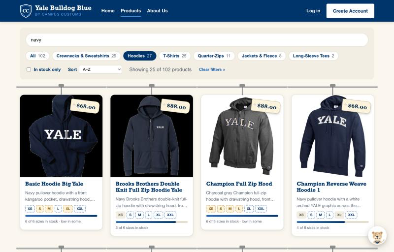

Summary
| # | Check | Result | Screenshot |
|---|---|---|---|
| 1 | Chat checks the inventory level and price of an item (honest stock and price from the database) | PASS | app_check_images/inventory.png |
| 2 | Dynamic search-result cards appear after a category question (hoodies) | PASS | app_check_images/search_cards.png |
| 3 | A Problem 9 usability feature: the product finder (search, category, count) | PASS | app_check_images/usability_finder.png |


Checks 1 and 2 were real chat calls to the live agent (no stubbed replies). Screenshots were taken in a 1280×820 browser window and are saved at 800 px wide. Automated regression check run just before this page was written: 8/8 groups passed.
Check 1: Chat checks inventory and price from the database

How it was tested, and the database ground truth
Question typed into the chat: "How much is the Baseball Left Chest Crewneck, and how many are in stock in medium and in XS?"
Reply: "The Baseball Left Chest Crewneck is $58.00. Medium: 5 in stock. XS: Out of Stock."
| Fact | Chat said | Database (campus_customs.db) |
|---|---|---|
| Price | $58.00 | $58.00 |
| Medium in stock | 5 | 5 |
| XS in stock | Out of Stock | 0 |
| Sizes with stock (card chips) | S, M, L, XXL | S, M, L, XXL (XS = 0, XL = 0) |
Check 2: Dynamic search-result cards after a category question

How it was tested, and the database ground truth
Question typed into the chat: "What hoodies do you have?" The page showed the heading "Yale Hoodies" and 12 cards. Every card's name exists in the catalogue and its price equals the database price:
| Card shown | Price on card | Database price |
|---|---|---|
| Basic Hoodie Big Yale | $68.00 | $68.00 |
| Brooks Brothers Double Knit Full Zip Hoodie Yale | $88.00 | $88.00 |
| Champion Full Zip Hood | $88.00 | $88.00 |
| Champion Reverse Weave Hoodie 1 | $68.00 | $68.00 |
| Crew Left Chest Hoodie | $68.00 | $68.00 |
| District Vit Hoodie Vintage Bulldog | $68.00 | $68.00 |
| District Vit Hoodie Vintage Sailor Bulldog | $68.00 | $68.00 |
| Fencing Left Chest Hoodie | $68.00 | $68.00 |
| Ice Hockey Left Chest Hoodie | $68.00 | $68.00 |
| Sailing Left Chest Hoodie | $68.00 | $68.00 |
| Squash Left Chest Hoodie | $68.00 | $68.00 |
| The Forest School Hoodie | $68.00 | $68.00 |
Check 3: Usability feature from Problem 9, the product finder

How it was tested, and the database ground truth
On the Products page, the Hoodies category pill was selected and "navy" was typed in the search box. The page read "Showing 25 of 102 products". The database says there are 27 hoodies, and 25 of them mention "navy" in their name, type, or description. The search matches words anywhere in those fields, so the gray Champion Full Zip Hood appears: its description mentions white-and-navy lettering and its colors include navy blue.
Source of the screenshots: the live running site, saved into output/app_check_images/. The images are linked with relative paths, so this page works when double-clicked as long as the folder stays next to it.